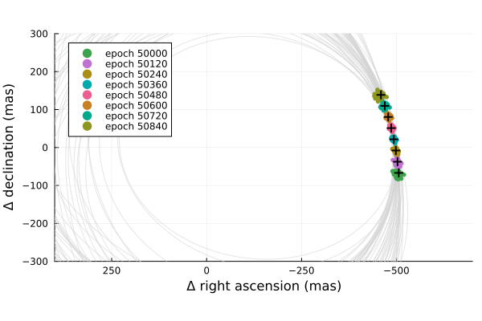

Posterior Predictive Checks
A posterior predictive check compares our true data with simulated data drawn from the posterior. This allows us to evaluate if the model is able to reproduce our observations appropriately. Samples drawn from the posterior predictive distribution should match the locations of the original data.
To demonstrate, we will fit a model to relative astrometry data:
using Octofitter
using Plots:Plots
using Distributions
astrom_like = PlanetRelAstromLikelihood(Table(;
epoch= [50000,50120,50240,50360,50480,50600,50720,50840,],
ra = [-505.764,-502.57,-498.209,-492.678,-485.977,-478.11,-469.08,-458.896,],
dec = [-66.9298,-37.4722,-7.92755,21.6356, 51.1472, 80.5359, 109.729, 138.651,],
σ_ra = fill(10.0, 8),
σ_dec = fill(10.0, 8),
cor = fill(0.0, 8)
))
@planet b Visual{KepOrbit} begin
a ~ truncated(Normal(10, 4), lower=0, upper=100)
e ~ Uniform(0.0, 0.5)
i ~ Sine()
ω ~ UniformCircular()
Ω ~ UniformCircular()
τ ~ UniformCircular(1.0)
P = √(b.a^3/system.M)
tp = b.τ*b.P*365.25 + 50420 # reference epoch for τ. Choose an MJD date near your data.
end astrom_like
@system Tutoria begin
M ~ truncated(Normal(1.2, 0.1), lower=0)
plx ~ truncated(Normal(50.0, 0.02), lower=0)
end b
model = Octofitter.LogDensityModel(Tutoria)
using Random
Random.seed!(0)
chain = octofit(model)Chains MCMC chain (1000×29×1 Array{Float64, 3}):
Iterations = 1:1:1000
Number of chains = 1
Samples per chain = 1000
Wall duration = 17.6 seconds
Compute duration = 17.6 seconds
parameters = M, plx, b_a, b_e, b_i, b_ωy, b_ωx, b_Ωy, b_Ωx, b_τy, b_τx, b_ω, b_Ω, b_τ, b_P, b_tp
internals = n_steps, is_accept, acceptance_rate, hamiltonian_energy, hamiltonian_energy_error, max_hamiltonian_energy_error, tree_depth, numerical_error, step_size, nom_step_size, is_adapt, loglike, logpost, tree_depth, numerical_error
Summary Statistics
parameters mean std mcse ess_bulk ess_tail rh ⋯
Symbol Float64 Float64 Float64 Float64 Float64 Float ⋯
M 1.1954 0.0934 0.0042 497.3175 589.1293 0.99 ⋯
plx 49.9992 0.0194 0.0006 919.1900 630.2421 0.99 ⋯
b_a 11.3999 2.2095 0.2061 113.8210 300.5450 1.00 ⋯
b_e 0.1696 0.1154 0.0077 240.0830 295.0240 0.99 ⋯
b_i 0.6186 0.1571 0.0129 148.6705 313.2937 1.00 ⋯
b_ωy 0.0220 0.7428 0.0767 104.6983 449.2080 1.01 ⋯
b_ωx -0.0769 0.6669 0.0655 116.9330 528.4281 1.02 ⋯
b_Ωy -0.0525 0.7277 0.1689 32.3608 214.9503 1.06 ⋯
b_Ωx 0.0472 0.6850 0.2884 6.6515 131.7861 1.21 ⋯
b_τy -0.0975 0.6765 0.0613 130.7825 259.2896 1.00 ⋯
b_τx 0.2559 0.6842 0.0702 111.2298 301.0906 1.00 ⋯
b_ω -0.3479 1.7846 0.1657 147.9387 318.8312 1.03 ⋯
b_Ω -0.3128 1.8545 0.5889 19.6758 143.8453 1.08 ⋯
b_τ 0.0961 0.2868 0.0232 196.3133 395.4152 1.00 ⋯
b_P 35.7910 10.5948 0.9882 113.7662 303.3969 1.00 ⋯
b_tp 51430.1750 3350.8108 297.5783 176.1596 312.9023 1.00 ⋯
2 columns omitted
Quantiles
parameters 2.5% 25.0% 50.0% 75.0% 97.5%
Symbol Float64 Float64 Float64 Float64 Float64
M 1.0206 1.1304 1.1998 1.2563 1.3769
plx 49.9612 49.9861 49.9996 50.0128 50.0343
b_a 7.8103 9.8225 11.0526 12.9196 16.4282
b_e 0.0072 0.0714 0.1544 0.2596 0.4104
b_i 0.2790 0.5160 0.6313 0.7313 0.8834
b_ωy -1.0072 -0.7121 0.0451 0.7833 1.0129
b_ωx -0.9966 -0.7255 -0.1199 0.5478 0.9802
b_Ωy -0.9999 -0.7864 -0.0820 0.6902 0.9993
b_Ωx -0.9987 -0.5985 0.0825 0.7270 1.0051
b_τy -0.9997 -0.7679 -0.1311 0.5093 0.9940
b_τx -0.9903 -0.3355 0.5078 0.8680 1.0105
b_ω -3.0305 -2.0424 -0.2118 0.9350 3.0345
b_Ω -2.9835 -2.2497 0.1189 1.1220 2.9346
b_τ -0.4758 -0.1238 0.1743 0.3414 0.4726
b_P 19.4360 27.8887 33.6826 42.4880 60.9271
b_tp 45045.1266 48469.0697 52883.5279 53823.3952 56412.9928
We now have our posterior as approximated by the MCMC chain. Convert these posterior samples into orbit objects:
# Instead of creating orbit objects for all rows in the chain, just pick
# every twentieth row.
ii = 1:20:1000
orbits = Octofitter.construct_elements(chain, :b, ii)50-element Vector{Visual{KepOrbit{Float64}, Float64}}:
Visual{KepOrbit{Float64}, Float64}(KepOrbit(10.7, 0.109, 0.614, -0.995, 4.08, 47500.0, 1.19), 50.00674064298127, 4.1247439314753753e6)
Visual{KepOrbit{Float64}, Float64}(KepOrbit(15.4, 0.408, 0.768, 0.459, 5.14, 51600.0, 1.25), 49.96680549326477, 4.1280405654070345e6)
Visual{KepOrbit{Float64}, Float64}(KepOrbit(7.56, 0.365, 0.535, -2.71, 4.28, 53500.0, 1.25), 50.01501779554228, 4.1240613138077087e6)
Visual{KepOrbit{Float64}, Float64}(KepOrbit(15.7, 0.185, 0.911, -0.287, 3.59, 46400.0, 1.25), 50.03220150739799, 4.1226448923999616e6)
Visual{KepOrbit{Float64}, Float64}(KepOrbit(13.2, 0.158, 0.733, -0.015, 3.9, 48400.0, 1.13), 50.00867276479016, 4.124584568963525e6)
Visual{KepOrbit{Float64}, Float64}(KepOrbit(8.45, 0.231, 0.333, -2.04, 3.56, 54200.0, 1.21), 49.97826565951914, 4.127093993320947e6)
Visual{KepOrbit{Float64}, Float64}(KepOrbit(10.6, 0.167, 0.597, -2.07, 1.88, 52400.0, 1.19), 49.99779071822734, 4.125482287056404e6)
Visual{KepOrbit{Float64}, Float64}(KepOrbit(11.6, 0.279, 0.433, 0.345, 6.0, 52700.0, 1.09), 49.980478682586224, 4.1269112548909043e6)
Visual{KepOrbit{Float64}, Float64}(KepOrbit(10.7, 0.197, 0.493, -2.55, 3.05, 53600.0, 1.07), 50.02261274789969, 4.1234351560067297e6)
Visual{KepOrbit{Float64}, Float64}(KepOrbit(13.9, 0.318, 0.717, -2.9, 3.04, 53400.0, 1.15), 50.01198468856606, 4.124311428239662e6)
⋮
Visual{KepOrbit{Float64}, Float64}(KepOrbit(9.74, 0.0968, 0.684, -1.05, 1.46, 53100.0, 1.18), 49.98662837944927, 4.126403534045929e6)
Visual{KepOrbit{Float64}, Float64}(KepOrbit(13.5, 0.143, 0.796, 2.93, 0.667, 47800.0, 1.41), 49.98338496284849, 4.126671295937882e6)
Visual{KepOrbit{Float64}, Float64}(KepOrbit(13.7, 0.0246, 0.806, -0.267, 0.378, 54300.0, 1.25), 49.96916708440332, 4.127845470219589e6)
Visual{KepOrbit{Float64}, Float64}(KepOrbit(9.76, 0.228, 0.549, 1.52, 5.14, 52700.0, 1.36), 50.008255588035475, 4.1246189768984686e6)
Visual{KepOrbit{Float64}, Float64}(KepOrbit(7.34, 0.369, 0.546, 0.246, 1.35, 53500.0, 1.24), 49.99407654343513, 4.1257887786125187e6)
Visual{KepOrbit{Float64}, Float64}(KepOrbit(12.1, 0.12, 0.638, -2.76, 1.08, 49900.0, 1.2), 50.01024482629493, 4.124454913516995e6)
Visual{KepOrbit{Float64}, Float64}(KepOrbit(10.9, 0.166, 0.719, 2.08, 0.971, 47500.0, 1.24), 50.014308845983, 4.124119772107309e6)
Visual{KepOrbit{Float64}, Float64}(KepOrbit(12.5, 0.111, 0.631, -0.6, 0.373, 53000.0, 0.984), 50.00516648205805, 4.1248737782726567e6)
Visual{KepOrbit{Float64}, Float64}(KepOrbit(18.5, 0.459, 0.894, 3.03, 1.32, 49600.0, 1.31), 50.032037615985644, 4.1226583970686942e6)Calculate and plot the location the planet would be at each observation epoch:
epochs = astrom_like.table.epoch' # transpose
x = raoff.(orbits, epochs)
y = decoff.(orbits, epochs)
Plots.plot(orbits, kind=(:raoff, :decoff), color=:lightgrey)
Plots.scatter!(
x, y,
lims=:symmetric,
markerstrokewidth=0,
markersize=3,
legend=:topleft,
label=["epoch $i" for i in epochs]
)
Plots.plot!(astrom_like, linewidth=2, color=:black, label="observed")
Plots.xlims!(-700,400)
Plots.ylims!(-300,300)
Looks like a great match to the data! Notice how the uncertainty around the middle point is lower than the ends. That's because the orbit's posterior location at that epoch is also constrained by the surrounding data points. We can know the location of the planet in hindsight better than we could measure it!
You can follow this same procedure for any kind of data modelled with Octofitter.